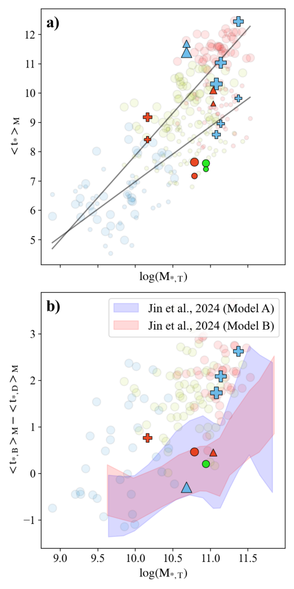

Galaxies
The formation of late-type galaxies has traditionally been described via two pathways: one producing pressure-supported classical bulges, the other rotationally supported pseudo-bulges. Early studies relied on photometric decompositions assuming an exponential disk extrapolated inwards.…